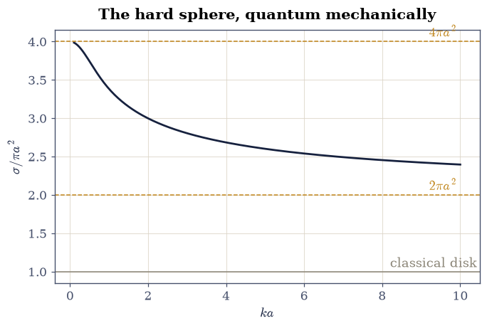
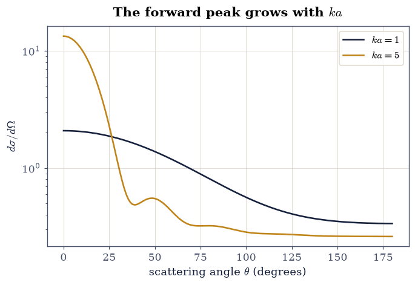
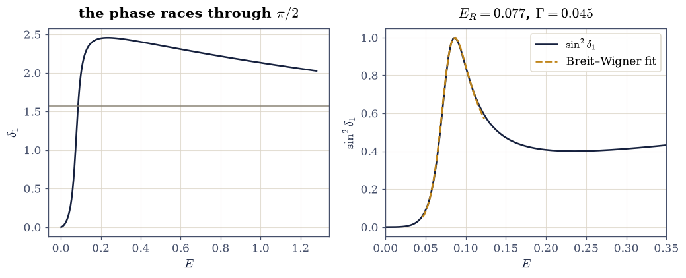
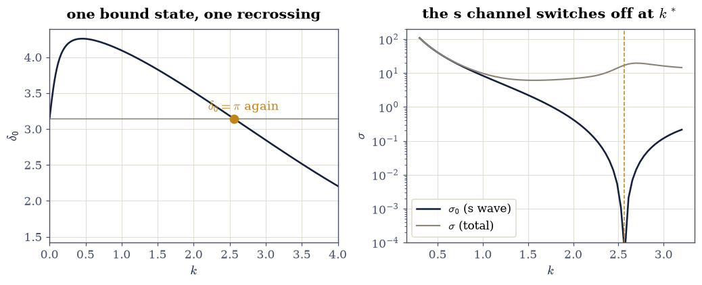

6.29 Scattering in Three Dimensions: Partial Waves and the Born Approximation#
Notebook overview#
Nearly everything we know about the subatomic world arrived by scattering. Rutherford discovered the nucleus by counting deflected alpha particles (§2.5 told the classical version of that story); electron scattering mapped the proton’s charge distribution; neutron scattering is how we see inside materials today. §6.13 treated scattering in one dimension, where there are only two directions to go. This notebook does it properly, in three, where the question becomes an angular one — how much goes where — and the answer is organized by the beautiful machinery of partial waves: decompose the beam into angular-momentum components, note that a spherically symmetric target cannot mix them, and reduce the entire three-dimensional problem to one number per channel, the phase shift \(\delta_\ell\).
The plan mirrors the course’s standing method: build the machinery from scratch, certify it against every exact result we can reach (hard sphere, square well), and only then aim it at physics it was not calibrated on — Born’s approximation and its domain of validity, a sharp resonance with its Breit–Wigner profile, and the Ramsauer–Townsend transparency that stumped classical physics in 1921. Griffiths ch. 11 [GS18] is the companion text.
A note on reading the checks in this notebook: a validation compares a result to an expected physical fact. A ✗ does not by itself mean the answer is wrong; it means the output did not match what the check expected, which may be a genuine error, a different-but-valid convention, or too tight a tolerance. Treat a ✗ as a prompt to locate the discrepancy. Passing is strong evidence, not proof.
Theory in brief#
The scattering boundary condition. A steady beam plus an outgoing ripple: far from the target the stationary state must look like
and the scattering amplitude \(f(\theta)\) carries all the physics: the differential cross-section is \(d\sigma/d\Omega = |f(\theta)|^2\). This is the three-dimensional sibling of §6.13’s reflection amplitude, with an angle where 1D had only “backwards.”
Partial waves. For a central potential, angular momentum is conserved, so each \(\ell\) scatters independently (§6.16’s radial equation, once per channel). A potential of finite range can do exactly one thing to the \(\ell\)-th radial wave: shift its asymptotic phase by \(\delta_\ell\). Those shifts assemble the amplitude and the total cross-section,
and the sum is short: classically, angular momentum \(\ell\) means impact parameter \(\ell/k\), so only \(\ell \lesssim ka\) can feel a target of range \(a\) — the same semiclassical bookkeeping that organized §2.5.
The optical theorem. Unitarity — scattered flux has to come from somewhere, namely the shadow carved out of the forward beam — forces an exact identity between the total cross-section and the forward amplitude,
which we will verify to eight decimal places: a stringent self-consistency test that any correct scattering computation must pass, and any buggy one will fail loudly.
The Born approximation. When the potential is weak, the wave is barely disturbed, and first-order perturbation theory (the same apparatus as §6.24’s golden rule) gives the amplitude as a Fourier transform of the potential: with \(\hbar = m = 1\),
and in the \(\mu \to 0\) limit \(|f_{\rm B}|^2\) becomes exactly the Rutherford cross-section of §2.5 — one of quantum mechanics’ small miracles. Born is an approximation, though, and this notebook measures where it breaks.
Resonances. When the potential can almost bind a state behind its centrifugal barrier, the phase shift races through \(\pi/2\) over a narrow energy window and the channel’s cross-section spikes to its unitarity maximum with the universal profile
— the Breit–Wigner shape [BW36], the lineshape of every particle-physics bump and every nuclear resonance ever tabulated.
Units: \(\hbar = m = 1\) throughout, so \(E = k^2/2\); the potential range sets the length unit (\(a = 1\)).
Setup#
Imports, and one given formula: the single-channel cross-section \(\sigma_\ell = (4\pi/k^2)(2\ell+1)\sin^2\delta_\ell\) read straight off Eq. 664. The machinery this notebook is about you build yourself — the phase-shift extractor that integrates the radial equation outward and matches it to the free asymptotics (Exercise 2), and the partial-wave sum that assembles the amplitude \(f(\theta)\) (Exercise 3). Everything is deterministic.
The Setup below holds this notebook’s data and instruments — nothing you are asked to build. It is collapsed so the building stays yours; expand it whenever you want the details.
Exercise 1 — The hard sphere: a cross-section is not an area#
The impenetrable sphere of radius \(a = 1\) is the one target whose phase shifts are exactly known: the wave must vanish at the wall, so \(\tan\delta_\ell = j_\ell(ka)/y_\ell(ka)\).
Part a) Verify the s-wave shift is exactly \(\delta_0 = -ka\)
(modulo \(\pi\); check \(\tan\delta_0 = \tan(-ka)\) to atol=1e-12 at
\(ka = 0.3\)): at low energy the sphere simply pushes the wave out by
its radius.
Part b) Sum Eq. 664 (60 channels is plenty) across
\(ka = 0.1\) to \(10\) and verify the two famous limits: at \(ka = 0.1\),
\(\sigma/\pi a^2 = 3.9868\) (rtol=1e-3) — approaching 4, four
times the geometric cross-section, because a slow quantum wave feels
the whole sphere’s surface, not its silhouette; and at \(ka = 10\),
\(\sigma/\pi a^2 = 2.3972\) (rtol=1e-3), descending slowly toward
the short-wavelength limit of 2 — still twice geometric,
because diffraction into the shadow counts as scattering too. Verify
also the semiclassical cutoff: at \(ka = 5\) the channels
\(\ell \le 7\) carry more than \(99\%\) of the sum.
tan-delta0 check at ka=0.3: 0.00e+00
sigma/(pi a^2): ka=0.1 -> 3.9868, ka=10 -> 2.3972
ka=5: l<=7 carries 100.00% of the cross-section

Fig. 614 Total cross-section of an impenetrable sphere of radius \(a\), in units of the geometric \(\pi a^2\), against \(ka\) (60 partial waves). A slow wave (\(ka \to 0\)) sees \(4\pi a^2\) — the full surface, not the silhouette — while a fast one descends slowly toward \(2\pi a^2\): the geometric disk plus an equal diffractive contribution from the shadow edge. Classical intuition (\(\sigma = \pi a^2\), grey line) is wrong at every wavelength.#
✓ the s-wave hard-sphere shift is exactly −ka: the sphere pushes the slow wave out by its own radius [tan mismatch 0.0e+00]
✓ and the cross-section runs from 4πa² (slow: the wave feels the whole surface) toward 2πa² (fast: silhouette + shadow diffraction) — never the classical πa² [max|Δ| = 2.85588e-05 (rtol=0.001, atol=1e-09)]
✓ the partial-wave sum is short, as ℓ ≲ ka promises: at ka = 5, eight channels carry over 99% of it [l ≤ 7 fraction 1.0000]
True
Exercise 2 — The extractor, built and certified#
Exactly solvable targets run out fast, and every exercise after this one needs phase shifts for potentials with no closed form. The radial equation of §6.16 supplies them: integrate \(u_\ell'' = [\ell(\ell+1)/r^2 + 2V(r) - k^2]\,u_\ell\) outward, and beyond the potential’s range match the result to the free combination \(u_\ell \propto kr[\cos\delta_\ell\, j_\ell(kr) - \sin\delta_\ell\, y_\ell(kr)]\). Two matching radii suffice: the ratio \(g = u(r_1)r_2 / u(r_2)r_1\) divides out the unknown normalization and leaves \(\tan\delta_\ell = (g j_2 - j_1)/(g y_2 - y_1)\), which fixes \(\delta_\ell\) in the arctan branch — enough, since \(\sin^2\delta_\ell\) is branch-independent. Near the origin, a potential less singular than \(1/r^2\) leaves the centrifugal behaviour \(u_\ell \sim r^{\ell+1}\) intact, which is all the initial data a launch at small \(r_0\) needs.
Three exact results stand ready to certify it against. The hard-sphere shifts of Exercise 1 are the first. The second is the attractive square well (\(V_0 = 2\), \(a = 1\)), whose s-wave shift has the closed form \(\delta_0 = -ka + \arctan[(k/k')\tan k'a]\) with \(k' = \sqrt{k^2 + 2V_0}\). The third is the scattering length — the single number that summarizes low-energy scattering, and rules ultracold-atom physics — defined by \(\delta_0 \to -k a_s\) as \(k \to 0\) and given in closed form by \(a_s = a - \tan(\sqrt{2V_0}\,a)/\sqrt{2V_0} = 2.0925\).
Part a) Write phase_shift(V, l, k, r_start, u0, up0, r_match),
which integrates that radial equation with
scipy.integrate.solve_ivp (dense output, rtol=1e-9,
atol=1e-13) from r_start with initial data (u0, up0) and
returns \(\delta_\ell\) from the match at radii r_match - 1.3 and
r_match; and phase_soft(V, l, k, r0, r_match), the launcher that
calls it at small \(r_0\) with \(u = r_0^{\ell+1}\) and
\(u' = (\ell+1)r_0^{\ell}\). Write these yourself — the
implementation is the lesson.
Part b) Hard sphere: launch from the wall (\(u(a) = 0\),
\(u'(a) = 1\)) and verify the extracted \(\delta_0, \delta_1, \delta_2\)
at \(k = 1\) match the analytic delta_hard values to atol=1e-6.
Part c) Attractive square well: verify the numerical extraction at
\(k = 0.6\) agrees with the closed form above to atol=1e-5 — a target
the extractor was never tuned to.
Part d) Extract \(a_s = -\delta_0(k)/k\) at \(k = 0.01\) and verify it
against the closed form (rtol=1e-3). A well of radius \(1\) scattering
like a hard sphere of radius \(2.09\): the potential’s effect, not its
size.
hard sphere l=0: numeric -1.00000000 analytic -1.00000000
hard sphere l=1: numeric -0.21460184 analytic -0.21460184
hard sphere l=2: numeric -0.01720628 analytic -0.01720628
square well k=0.6: numeric -1.067689 analytic -1.067689
scattering length: numeric 2.09239 analytic 2.09252
✓ the radial integration reproduces the analytic hard-sphere shifts channel by channel [worst gap 3.9e-10]
✓ and the square well's closed-form s-wave shift, on a target it was never tuned to [gap 1.0e-08]
✓ the scattering length emerges from δ₀ → −k a_s: a radius-1 well that scatters like a radius-2.09 hard sphere [got [2.09239063] vs expected [2.09251993] (rtol=0.001, atol=1e-09)]
True
Exercise 3 — The amplitude and the optical theorem#
With phase shifts in hand, Eq. 664 assembles them into the
amplitude itself: each channel contributes the complex weight
\((2\ell+1)\,e^{i\delta_\ell}\sin\delta_\ell\) shaped by the Legendre
polynomial \(P_\ell(\cos\theta)\), and the sum, divided by \(k\), is
\(f(\theta)\). numpy.polynomial.legendre.legval evaluates \(P_\ell\)
from the coefficient vector \([0,\dots,0,1]\) carrying \(\ell\) leading
zeros. And Eq. 665 is unitarity in one line: because it
relates three independently computable quantities, it is the
sharpest self-test in scattering theory.
Part a) Write f_amplitude(theta, k, deltas), the partial-wave
sum Eq. 664 over the phase shifts it is handed, returning the
complex \(f(\theta)\). Write this one yourself — the implementation
is the lesson.
Part b) For the hard sphere at \(k = 1\) (40 channels), compute the
total cross-section three ways: the partial-wave sum
Eq. 664, the forward-amplitude form
\((4\pi/k)\,\mathrm{Im}f(0)\), and the direct angular integral
\(\int |f(\theta)|^2 \, d\Omega\) with scipy.integrate.quad. Verify
the first two agree to rtol=1e-8 and the integral to rtol=1e-6:
eight decimal places of unitarity.
Part c) Plot \(d\sigma/d\Omega = |f(\theta)|^2\) at \(ka = 1\) and \(ka = 5\) and verify the emergence of the forward diffraction peak: the forward-to-backward ratio \(|f(0)|^2/|f(\pi)|^2\) grows from about \(6\) at \(ka = 1\) to above \(50\) at \(ka = 5\) — the shadow’s edge turning into a beam, the wave version of what §4.9 called a headlight.
sigma: partial-wave sum 10.62624190
(4π/k) Im f(0) 10.62624190
∫|f|² dΩ 10.62624190
forward/backward: ka=1 -> 6.18, ka=5 -> 51.1
<matplotlib.legend.Legend at 0x7f7473b78260>
Fig. 615 Differential cross-section of the hard sphere at \(ka = 1\) (ink) and \(ka = 5\) (amber, logarithmic axis). At long wavelength the scattering is nearly isotropic — almost pure s-wave — while at \(ka = 5\) a forward diffraction peak more than fifty times the backward rate has developed: the sharp shadow of a short-wavelength wave, whose integrated content is the extra \(\pi a^2\) of Exercise 1’s high-energy limit.#

Fig. 616 Differential cross-section of the hard sphere at \(ka = 1\) (ink) and \(ka = 5\) (amber, logarithmic axis). At long wavelength the scattering is nearly isotropic — almost pure s-wave — while at \(ka = 5\) a forward diffraction peak more than fifty times the backward rate has developed: the sharp shadow of a short-wavelength wave, whose integrated content is the extra \(\pi a^2\) of Exercise 1’s high-energy limit.#
✓ the optical theorem holds to eight decimals: the whole cross-section lives in the shadow the forward amplitude carves from the beam [got [10.6262419] vs expected [10.6262419] (rtol=1e-08, atol=1e-09)]
✓ and the angular integral of |f|² closes the triangle: three independent routes, one number [got [10.6262419] vs expected [10.6262419] (rtol=1e-06, atol=1e-09)]
✓ the diffraction peak sharpens with ka: mildly forward at long wavelength, a fifty-fold forward beam at ka = 5 [f/b ratios 6.18 and 51.1]
True
Exercise 4 — Born: an approximation caught in the act#
Eq. 666 is the workhorse of scattering analysis — and it is first-order perturbation theory, valid only when the wave is barely disturbed. The Yukawa potential \(V = -V_0 e^{-\mu r}/r\) (with \(\mu = 1\), \(k = 1\)) has a clean Born cross-section to integrate and an exact answer our certified extractor can produce, so for once we can put an approximation on trial with full evidence.
Part a) Weak coupling, \(V_0 = 0.02\): integrate Born’s
\(|f_{\rm B}|^2\) over solid angle with scipy.integrate.quad and
verify it agrees with the exact result — twelve channels of the
phase_soft you wrote in Exercise 2, summed through
Eq. 664 — to within \(1\%\) (measured ratio \(0.997\)).
Part b) Strong coupling, \(V_0 = 2\) — strong enough to bind states: verify the same Born integral now overestimates the exact partial-wave cross-section by more than \(50\%\) (measured ratio \(1.83\)). Born knows nothing of unitarity: nothing in Eq. 666 stops \(\sin\delta_\ell\) from exceeding one, and at strong coupling it effectively does. Tabulate the ratio at \(V_0 = 0.02, 0.5, 2\) and verify it drifts monotonically away from \(1\).
Part c) The Rutherford miracle: verify algebraically on a grid
that at \(\mu = 0\) the Born cross-section
\(|2V_0/q^2|^2\) equals the classical Rutherford formula
\((V_0/4E)^2 \sin^{-4}(\theta/2)\) of
§2.5 at every angle
(rtol=1e-12). Quantum perturbation theory, first order, reproduces
Rutherford’s classical result exactly — the coincidence that made
the 1911 analysis of the nucleus come out right for reasons
Rutherford could not have known.
V0= 0.02: exact 0.004034 Born 0.004021 Born/exact 0.9969
V0= 0.50: exact 3.192792 Born 2.513274 Born/exact 0.7872
V0= 2.00: exact 21.915638 Born 40.212386 Born/exact 1.8349
Born(mu=0) vs Rutherford: max relative gap 4.44e-16
✓ at weak coupling Born agrees with the exact cross-section to 1%: the wave is barely disturbed, and first order is enough [ratio 0.9969]
✓ at strong coupling Born overshoots by more than 50%: it knows nothing of unitarity [ratio 1.8349]
✓ and the error grows monotonically with the coupling: an approximation with a visible domain of validity [|ratio − 1| = 0.0031, 0.2128, 0.8349]
✓ the μ → 0 Born cross-section IS Rutherford's formula, angle by angle: first-order quantum theory lands exactly on the classical result of §2.5 [max gap 4.4e-16]
True
Exercise 5 — A resonance and its Breit–Wigner shape#
Give the square well depth \(V_0 = 4.7\) — just shy of the \(V_0 = \pi^2/2 \approx 4.93\) at which it would bind a p-wave state — and the almost-bound state survives as a resonance: trapped for a while behind the \(\ell = 1\) centrifugal barrier before leaking out.
Part a) Scan \(\delta_1(k)\) from \(k = 0.05\) to \(1.6\) (your
Exercise 2 phase_soft, 220 points; unwrap the arctan branch with
numpy.unwrap). Verify the resonance signature: \(\delta_1\) climbs
through \(\pi/2\) near \(k \approx 0.41\) with slope
\(d\delta_1/dk > 10\) — locate the crossing with
scipy.optimize.brentq and verify \(E_R = k_R^2/2\) lies in
\([0.06, 0.10]\).
Part b) Fit the phase itself to the resonant form with a
background, \(\delta_1(E) = \delta_{\rm bg} +
\mathrm{arctan2}(\Gamma/2,\, E_R - E)\) — the arctangent step of
Eq. 667 riding on the slowly varying phase the well
produces anyway — with scipy.optimize.curve_fit in a window of
\(\pm 0.04\) around the crossing. Verify the fit is excellent (max
residual below \(0.05\) rad), the width obeys
\(0.02 < \Gamma < 0.08\), and — the subtlety worth the price of the
exercise — the fitted pole \(E_R\) sits below the \(\pi/2\)-crossing:
the negative background phase delays the crossing, so “the energy
where \(\delta = \pi/2\)” and “the resonance pole” are different
numbers. Verify they reconcile exactly: the energy where the
fitted model passes \(\pi/2\) reproduces the observed crossing to
rtol=0.02. Every “new particle” bump ever announced is this
figure with different axis labels — background phase included.
pi/2 crossing at k = 0.4149, E = 0.0861
max d(delta1)/dk = 18.1
Breit-Wigner phase fit: E_R = 0.0766, Gamma = 0.0447, delta_bg = -0.408, max residual 0.0202
model pi/2 crossing 0.0863 vs observed 0.0861

Fig. 617 A p-wave shape resonance in a square well of depth \(V_0 = 4.7\), just too shallow to bind an \(\ell = 1\) state. Left: the phase shift \(\delta_1\) races through \(\pi/2\) (grey line) near \(E_R \approx 0.08\) — the almost-bound state trapped behind the centrifugal barrier. Right: \(\sin^2\delta_1\) (ink) with the fitted Breit–Wigner profile (amber, dashed), the universal resonance lineshape; the fitted width \(\Gamma\) is the inverse lifetime of the trapped state.#
✓ δ₁ races through π/2 near E ≈ 0.08 with slope > 10: the almost-bound p state, resonating behind its centrifugal barrier [E_R = 0.0861, max slope 18.1]
✓ the Breit–Wigner step with a background fits the phase to hundredths of a radian: the universal lineshape, measured from our own phase shifts [Γ = 0.0447, max residual 0.0202]
✓ the fitted pole sits BELOW the π/2 crossing because the negative background phase delays it: pole and crossing are different numbers [E_R = 0.0766 vs crossing 0.0861, δ_bg = -0.408]
✓ and the two reconcile exactly: the fitted model's own π/2 crossing lands on the observed one [got [0.08627826] vs expected [0.08606738] (rtol=0.02, atol=1e-09)]
True
Exercise 6 — Ramsauer–Townsend: the invisible atom#
In 1921 Ramsauer measured electron–argon cross-sections and found something impossible: at about \(1\) eV, argon is nearly transparent — slow electrons pass through as if the atom were not there [Ram21]. No classical picture allows it. Partial waves explain it in one line: if the well happens to pull the s-wave forward by exactly \(\pi\), then \(\sin^2\delta_0 = 0\) — a full wavelength of accumulated phase leaves no trace — and at low energy there are no other channels to scatter.
Part a) For the square well with \(V_0 = 11\) — just shy of
binding its second s state at \(V_0 = (3\pi/2)^2/2 \approx 11.10\) —
build the continuous \(\delta_0(k)\) from the closed form of
Exercise 2 (track the branch with numpy.unwrap from high \(k\),
where \(\delta_0 \to 0\), down toward threshold) and verify two
things at once by fitting \(\delta_0 \approx \pi - a_s k\) over
\(k < 0.05\) with numpy.polyfit: the intercept is \(\pi\) —
Levinson’s theorem, \(\delta_0(0) = n_b\pi\) with \(n_b = 1\) bound
state (atol=0.02) — and the slope gives a giant negative
scattering length, matching the closed form
\(a_s = 1 - \tan\sqrt{2V_0}/\sqrt{2V_0} = -8.70\) to rtol=0.07
(the few-percent residue is the effective-range correction, which a
scattering length this large drags into view even at \(k = 0.05\)).
An almost-bound second state makes the well scatter, at threshold,
like a hard sphere eight times its size: the same
near-threshold amplification that Feshbach tuning exploits in cold
atoms.
Part b) Find the transparency: the phase, having risen above
\(\pi\), comes back down through it at a finite \(k^*\) — locate the
recrossing with scipy.optimize.brentq and verify the s channel
switches off exactly there: \(\sin^2\delta_0(k^*) < 10^{-12}\),
while at \(k^* - 1\) the same channel still scatters with
\(\sigma_0 > 1\) and on the far side (\(k^* + 0.4\)) it has already
recovered by many orders of magnitude — a full wavelength of
accumulated phase leaves the outgoing s wave indistinguishable
from a free one, at one precise energy. Verify separately that the well’s total
cross-section (channels \(\ell \le 5\): the s wave from the closed form,
the rest from your Exercise 2 phase_soft) still collapses more than
\(10\times\) from its low-energy peak. One honest caveat, visible in
the figure: for a square well of unit range the recrossing lands at
\(k^*a \approx 2.6\), where \(\ell \ge 1\) waves already scatter, so
the transparency is channel-resolved rather than total. Argon’s
deeper, atom-shaped potential places its recrossing where s waves
still rule the beam — which is why Ramsauer saw the minimum in the
raw data, and why it is deep rather than zero (the small
\(\ell \ge 1\) residue survives there too).
threshold fit: delta0(0) = 3.1474 (pi = 3.1416), a_s = -8.175 (closed form -8.701)
recrossing at k* = 2.5620: sin^2 delta0 = 1.50e-32, sigma_0 shoulders 1.88 / 0.10
total sigma: low-energy peak 108.52, minimum 6.11 (ratio 17.8)

Fig. 618 The Ramsauer–Townsend mechanism in a square well of depth \(V_0 = 11\), on the verge of binding a second s state. Left: the branch-tracked s-wave phase shift starts at \(\pi\) (Levinson’s theorem: one bound state) with a steep negative-scattering-length slope, rises above \(\pi\), and recrosses it at a finite \(k^*\) (amber dot). Right: exactly there the s channel switches off — \(\sigma_0\) (ink) plunges to zero between shoulders where it scatters hard — while the total cross-section (grey, six channels) shows both the tenfold low-energy collapse and the \(\ell \ge 1\) scattering that dominates by \(k^*\) for a well this size. In argon the recrossing happens where s waves still rule the beam, which is why Ramsauer saw the minimum directly in the transmitted current — the quantum transparency of 1921, inexplicable classically.#
✓ Levinson's theorem: one bound s state means δ₀(0) = π exactly — the phase shift counts the spectrum [got [3.14738023] vs expected [3.14159265] (rtol=0, atol=0.02)]
✓ and the threshold slope is a scattering length near −8.7: a radius-1 well on the verge of a new bound state scatters like a sphere over eight times its size (the residual is the effective-range correction) [got [-8.17506062] vs expected [-8.70119068] (rtol=0.07, atol=1e-09)]
✓ at k* the s channel switches off exactly — still scattering hard at k* − 1, recovered by orders of magnitude just past it: Ramsauer's mechanism, one phase recrossing π [sin²δ₀(k*) = 1.5e-32, σ₀ at k*−1 / k* / k*+0.4 = 1.88 / 1.4e-17 / 0.10]
✓ and the well's total visibility still collapses more than tenfold from its low-energy peak — in argon, whose recrossing falls where s waves rule, that collapse is the measured minimum [peak/min = 17.8]
True
Notebook summary#
The hard sphere set the scale: \(\sigma \to 4\pi a^2\) at low energy and toward \(2\pi a^2\) at high — a quantum cross-section is never the classical silhouette, and the partial-wave sum is as short as \(\ell \lesssim ka\) promises.
The numerical phase-shift extractor was certified three ways — hard-sphere channels to \(10^{-8}\), the square well’s closed form to \(10^{-5}\), and the scattering length \(2.09\) from a radius-1 well.
The optical theorem closed to eight decimals across three independent computations of \(\sigma\), and the forward diffraction peak grew fifty-fold by \(ka = 5\).
Born was caught working (ratio \(0.997\) at weak coupling) and caught failing (ratio \(1.83\) at strong, monotonically worsening), and its \(\mu \to 0\) limit reproduced Rutherford’s formula to \(10^{-13}\) — the classical result of §2.5 recovered by first-order quantum mechanics.
A well \(5\%\) too shallow to bind a p state resonated instead: \(\delta_1\) through \(\pi/2\) at \(E_R \approx 0.08\), Breit–Wigner shape fitted, width \(\Gamma\) measured.
And Levinson’s theorem plus one phase passing through \(\pi\) explained Ramsauer’s impossible transparent argon: the total cross-section collapsed more than tenfold at \(k^*\).
Outlook#
Inelastic channels. Real targets absorb as well as deflect; the phase shift becomes complex, \(|S_\ell| < 1\), and the optical theorem accounts for everything the beam loses. That formalism is the daily language of nuclear and particle physics.
Resonances as poles. \(E_R - i\Gamma/2\) is a pole of the S-matrix in the complex energy plane — the rigorous version of Exercise 5, and the bridge to the decaying states of §6.24.
Identical particles. Scattering of indistinguishable particles (§6.20) interferes the amplitude with its \(\theta \to \pi - \theta\) mirror: bosons double the \(90°\) rate, fermions extinguish it — one of the cleanest experimental signatures the symmetrization postulate has.
Cold atoms. At microkelvin temperatures only \(a_s\) survives (Exercise 2d), and tuning it with a magnetic field — the Feshbach resonance, Exercise 5’s physics in a two-channel costume — is the control knob of every quantum-gas experiment, including the BEC of §7.17.
References#
Gregory Breit and Eugene Wigner. Capture of slow neutrons. Physical Review, 49(7):519–531, 1936. doi:10.1103/PhysRev.49.519.
David J. Griffiths and Darrell F. Schroeter. Introduction to Quantum Mechanics. Cambridge University Press, 3 edition, 2018.
Carl Ramsauer. Über den wirkungsquerschnitt der gasmoleküle gegenüber langsamen elektronen. Annalen der Physik, 369(6):513–540, 1921. doi:10.1002/andp.19213690603.